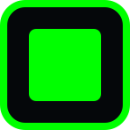
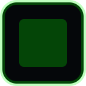
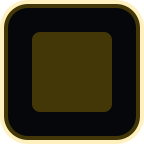
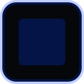
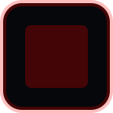
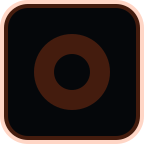
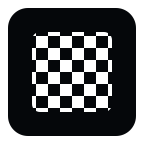
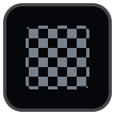
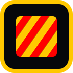
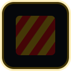

Stream Deck lighting key assets

Green · lit

Green · dim
Yellow · lit

Yellow · dim
Blue · lit

Blue · dim
White · lit
White · dim
Red · lit

Red · dim
Focus · lit

Focus · dim

Checkered · lit

Checkered · dim

Debris · lit

Debris · dim
Clear · lit
Clear · dim
Lights action
Flag action